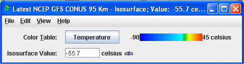

Overview
Isosurfaces can be made in two types of displays, regular isosurfaces, and isosurfaces colored by another parameter. An isosurface is a 3D surface mapping the location of a single parameter value through a 3D field. Isosurfaces are a 3D analog of a single contour line in a 2D plot; the intersection of an isosurface and any plane is a contour line of the same value in that plane.

Properties
- Color Table - Shows the active color table and the associated high and low data values in the units the display is made in. As the mouse pointer is moved over the color bar, the value at a particular color is shown. Right click on the color bar or click on the button that displays the name of the Color Table to make modifications to the color bar. This allows you to open the Color Table Editor, change the range, select other color tables, etc.
- Isosurface Value - Sets the isosurface value. You can do this by clicking the
 button or entering a
value in the field and press Return.
button or entering a
value in the field and press Return.
Menus
Many of the menu items seen utilizing this display are standard options that can be found in the Menus section of the Layer Controls Overview page. However, there is one option that is unique to this display.
The View menu has this unique option:
- Use Data Projection - Re-centers the display and resets the zoom level back to the display's initial settings without changing any other preferences you have modified.